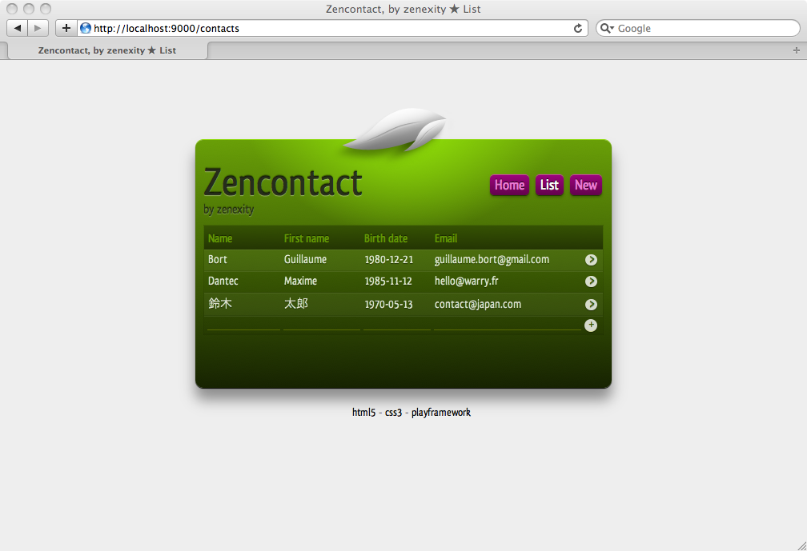

Play 1.0.2 — Release notes
Play 1.0.2 is a maintenance release of the Play 1.0 branch. The major new features are the support for the module repository and built-in protection against CSRF attacks. It also fixes a lot of small bugs.
Play 1.0.2 is a maintenance release and is fully compatible with the 1.0 series. If you encounter any problems please ask us on the Google Group.
You can read about the fixed bugs on the 1.0.2 road map page. The most important changes are highlighted on this page.
Module repository
The module repository’s goal is to centralize all contributed modules for the Play framework, and allow easy installation. The new module-related commands are:
play list-modules, to list the repository’s contentsplay install, to install a version of a module locallyplay new-module, to create a new module skeletonplay build-module, to package a module and publish it to the repository.
Also, you will see that almost all modules have been deleted. Only a bunch of ‘core’ modules are directly available: testrunner, docviewer, crud and secure.
The other modules are now optional. So if you want for example to install the GWT support, just type play install gwt, and you will get the latest version of the module.
Why have we moved modules? Because we need to focus on the core framework to have a simple project to manage. Also, as many people wanted to contributed modules, it is easier to do it this way: each module is a standalone project with a dedicated maintainer. So please, if you want to report a bug on a specific module, just use its project homepage and its dedicated bug tracker.
As an immediate benefit, the lifecycle of modules is no more tied to the framework lifecycle. A module can be released more often than the framework itself. And finally, because the framework does not contain optional modules anymore, the Play distribution size has been halved.
Read more about the modules repository on this dedicated page.
Built-in Cross-Site Request Forgery protection
CSRF attacks can be really problematic in web applications.
This attack method works by including malicious code or a link in a page that accesses a web application that the user is believed to have authenticated. If the session for that web application has not timed out, an attacker may execute unauthorized commands.
To prevent this attack, the first thing to do is to use GET and POST method appropriately. That means that only POST methods must be used to run an interaction that can change the application’s state.
For POST requests, the only way to secure critical actions properly is to issue an authenticity token. Play 1.0.2 now has a built-in helper to handle that:
- a new
checkAuthenticity()method available in controllers, that checks for a valid authenticity token in the request parameters and sends a forbidden response if something is bad session.getAuthenticityToken()generates an authenticity token that is only valid for the current session#{authenticityToken /}creates an hidden input field that you can add to any form.
So for example:
public static destroyMyAccount() {
checkAuthenticity();
…
}
Will only work when called from a form including a proper authenticity token:
#{form @ destroyMyAccount()}
#{authenticityToken /}
<input type="submit" value="destroy my account">
#{/form}
You can of course add this as a before filter if you want to protect all actions of a hierarchy of controllers. Read more in the Security Guide.
HEAD method supported by default
Play now responds automatically to HEAD requests if there is an existing route for the GET method. This is because it is requested by the HTTP RFC that any resource respond to HEAD request as well.
http://www.w3.org/Protocols/rfc2616/rfc2616-sec9.html
The HEAD method is identical to GET except that the server MUST NOT return a message-body in the response. The metainformation contained in the HTTP headers in response to a HEAD request SHOULD be identical to the information sent in response to a GET request. This method can be used for obtaining metainformation about the entity implied by the request without transferring the entity-body itself. This method is often used for testing hypertext links for validity, accessibility, and recent modification.
So any HEAD request will invoke your action method, but the response content will not be sent to the client. You can of course specialize it by adding a custom route to respond to HEAD requests with your routes file. For example:
GET /orders/{id} Orders.show
HEAD /orders/{id} Orders.showHead
New sample application, ‘zencontact’
A new sample, that is a port of a Wicket-based contact management application. There is also a Scala version of this application available in the Scala module package, for those interested.

Better support for application server deployment
We have tested the deployment of a Play generated WAR archive on several application servers. You can check the current compatibility matrix.
| JBoss 4.2.x | JBoss 5.x | JBoss 6M2 | Glasshfish v3 | IBM Websphere 6.1 | IBM Websphere 7 | Geronimo 2.x | Tomcat 6.x | Jetty 7.x | Resin 4.0.5 |
|---|---|---|---|---|---|---|---|---|---|
| ✓ | ✓ | ✓ | ✓ | ✓ | ✓ | ✓ | ✓ | ✓ | ✓ |
New features for reversed action in templates
The @@ syntax, that allow to reverse an action to an absolute URL, is now available in tag parameters. For example:
#{form @@save()}
…
#{/}
It is very useful if you use the template engine to generate stuff like e-mail, in which you need to express URL in an absolute fashion.
Also, binding complex objects in now supported. So for example, with this action:
public static void search(SearchParams params) {
…
}
SearchParams, being:
public class SearchParams {
public String keywords;
public String mode;
}
You can use in a template, something like:
@{search(params)}
That would generate a URL containing several values in the queryString, like:
/search?params.keywords=xxxx¶ms.mode=AND
A new command to generate the application Javadoc
Now you can generate the Javadoc for your project easily, using:
play javadoc
It generates the Javadoc API documentation for your project and its modules.
An even better Eclipse plugin in this release
The Eclipse plugin now has several new features:
- Advanced route file editor, with content assist, missing action detection, and hyperlinks
- Advanced template files editor, with some content assist, and hyperlinks
- Wizard to create new Controllers, Models and Templates
- Integrated test runner (using an embedded web browser)
To install this plugin, copy the JAR file from $PLAY_HOME/support/eclipse to $ECLIPSE_HOME/dropins.
Next release: Play 1.0.3 release notes